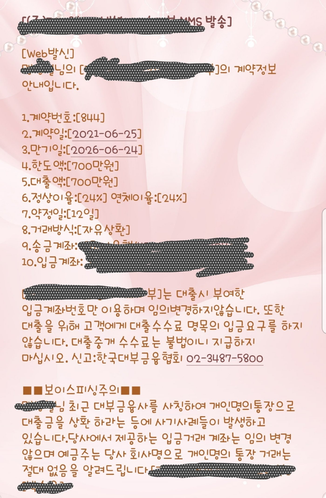

[개인회생자대출] 김용혁이사님 정말감사합니다
재직상태:4대보험유 직장인
기간:2년3개월
소득:2600(연봉)
신용점수:350점 개인회생60회납부 면책전
채무내역:밀*언 1200 태*900 세*230
대출이유:소액대출및 대환대출(중금리)
기대출이있어서 추가대출은 기대도
안했어요 최근에받은 대출도있어서요
소액으로급하게 쓸때가있어서
김용혁이사님께 톡을 보냇습니다
중금리로대출을받고싶었지만
최근에 대출받은게있어서
안되었지만 필요원자금보다 훨씬더
대출을받을수있었습니다
매번 필요할때 마다 도와주셔서
너무 감사드립니다
열심히 잘갚고 나중에중금리로
갈아탈수 있기를 바래봅니다
김용혁이사님 정말감사합니다
